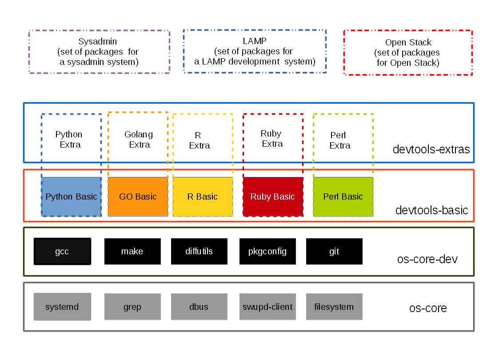

Bundle overview¶
Linux-based operating systems contain the code of several hundred, if not thousands, of open source projects. To make this manageable, distributions use a concept called “packages” to configure and compile the source code of these projects into binaries.
Many distributions then split the content of these compiled packages into so-called sub-packages, which are the granularity at which these distributions deploy their software. With those kinds of distributions, system administrators can then install and update sub-packages individually or as a set, using tools such as “yum” and “apt-get.”
The Clear Linux* OS for Intel® Architecture does things a bit differently. While we also use the concept of packages to manage compiling source code into binaries, we do not use the package concept to deploy software. Instead, we provide “bundles” that provide a set of functionality to the system administrator, independent of how many and which pieces of the upstream open source projects are needed for this functionality. The diagram below gives an overall picture of it.
